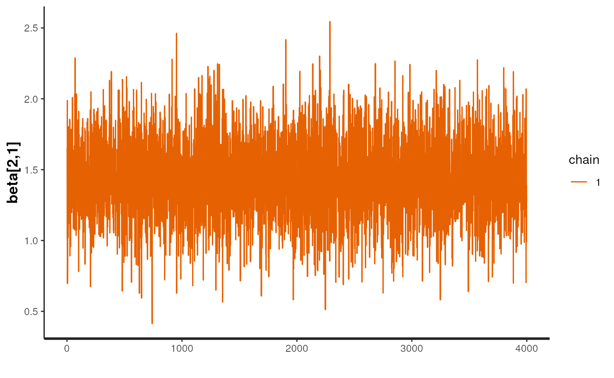
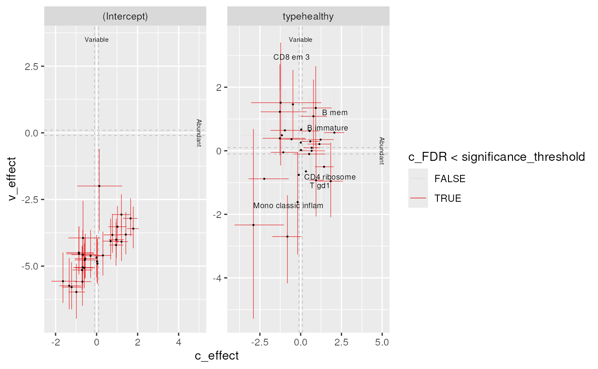

Overview of the sccomp package
Stefano Mangiola
2024-08-27
Source:vignettes/introduction.Rmd
introduction.RmdAbstract
Sccomp is a generalised method for differential composition and variability analyses. It tests differences in cell type proportion, for count data. It is able of flexible continuous/discrete models, removal of unwanted variation, removal of outliers, multilevel random/effect modelling.


Sccomp is a generalised method for differential composition and variability analyses.
Characteristics
- Modelling counts
- Modelling proportionality
- Modelling cell-type specific variability
- Cell-type information share for variability shrinkage
- Testing differential variability
- Probabilistic outlier identification
- Cross-dataset learning (hyperpriors).
Installation
Bioconductor
if (!requireNamespace("BiocManager")) install.packages("BiocManager")
BiocManager::install("sccomp")Github
devtools::install_github("stemangiola/sccomp")Analysis
sccomp can model changes in composition and variability.
By default, the formula for variability is either ~1, which
assumes that the cell-group variability is independent of any covariate
or ~ factor_of_interest, which assumes that the model is
dependent on the factor of interest only. The variability model must be
a subset of the model for composition.
Binary factor
Of the output table, the estimate columns start with the prefix
c_ indicate composition, or with
v_ indicate variability (when
formula_variability is set).
From Seurat, SingleCellExperiment, metadata objects
sccomp_result =
single_cell_object |>
sccomp_estimate(
formula_composition = ~ type,
.sample = sample,
.cell_group = cell_group,
bimodal_mean_variability_association = TRUE,
cores = 1
) |>
sccomp_remove_outliers(cores = 1) |> # Optional
sccomp_test()From counts
sccomp_result =
counts_obj |>
sccomp_estimate(
formula_composition = ~ type,
.sample = sample,
.cell_group = cell_group,
.count = count,
bimodal_mean_variability_association = TRUE,
cores = 1
) |>
sccomp_remove_outliers(cores = 1) |> # Optional
sccomp_test()##
## SAMPLING FOR MODEL 'glm_multi_beta_binomial' NOW (CHAIN 1).
## Chain 1:
## Chain 1: Gradient evaluation took 0.000398 seconds
## Chain 1: 1000 transitions using 10 leapfrog steps per transition would take 3.98 seconds.
## Chain 1: Adjust your expectations accordingly!
## Chain 1:
## Chain 1:
## Chain 1: Iteration: 1 / 4300 [ 0%] (Warmup)
## Chain 1: Iteration: 301 / 4300 [ 7%] (Sampling)
## Chain 1: Iteration: 1300 / 4300 [ 30%] (Sampling)
## Chain 1: Iteration: 2300 / 4300 [ 53%] (Sampling)
## Chain 1: Iteration: 3300 / 4300 [ 76%] (Sampling)
## Chain 1: Iteration: 4300 / 4300 [100%] (Sampling)
## Chain 1:
## Chain 1: Elapsed Time: 2.971 seconds (Warm-up)
## Chain 1: 20.878 seconds (Sampling)
## Chain 1: 23.849 seconds (Total)
## Chain 1:
##
## SAMPLING FOR MODEL 'glm_multi_beta_binomial' NOW (CHAIN 1).
## Chain 1:
## Chain 1: Gradient evaluation took 0.000335 seconds
## Chain 1: 1000 transitions using 10 leapfrog steps per transition would take 3.35 seconds.
## Chain 1: Adjust your expectations accordingly!
## Chain 1:
## Chain 1:
## Chain 1: Iteration: 1 / 20299 [ 0%] (Warmup)
## Chain 1: Iteration: 301 / 20299 [ 1%] (Sampling)
## Chain 1: Iteration: 1300 / 20299 [ 6%] (Sampling)
## Chain 1: Iteration: 2300 / 20299 [ 11%] (Sampling)
## Chain 1: Iteration: 3300 / 20299 [ 16%] (Sampling)
## Chain 1: Iteration: 4300 / 20299 [ 21%] (Sampling)
## Chain 1: Iteration: 5300 / 20299 [ 26%] (Sampling)
## Chain 1: Iteration: 6300 / 20299 [ 31%] (Sampling)
## Chain 1: Iteration: 7300 / 20299 [ 35%] (Sampling)
## Chain 1: Iteration: 8300 / 20299 [ 40%] (Sampling)
## Chain 1: Iteration: 9300 / 20299 [ 45%] (Sampling)
## Chain 1: Iteration: 10300 / 20299 [ 50%] (Sampling)
## Chain 1: Iteration: 11300 / 20299 [ 55%] (Sampling)
## Chain 1: Iteration: 12300 / 20299 [ 60%] (Sampling)
## Chain 1: Iteration: 13300 / 20299 [ 65%] (Sampling)
## Chain 1: Iteration: 14300 / 20299 [ 70%] (Sampling)
## Chain 1: Iteration: 15300 / 20299 [ 75%] (Sampling)
## Chain 1: Iteration: 16300 / 20299 [ 80%] (Sampling)
## Chain 1: Iteration: 17300 / 20299 [ 85%] (Sampling)
## Chain 1: Iteration: 18300 / 20299 [ 90%] (Sampling)
## Chain 1: Iteration: 19300 / 20299 [ 95%] (Sampling)
## Chain 1: Iteration: 20299 / 20299 [100%] (Sampling)
## Chain 1:
## Chain 1: Elapsed Time: 3.629 seconds (Warm-up)
## Chain 1: 125.488 seconds (Sampling)
## Chain 1: 129.117 seconds (Total)
## Chain 1:
##
## SAMPLING FOR MODEL 'glm_multi_beta_binomial' NOW (CHAIN 1).
## Chain 1:
## Chain 1: Gradient evaluation took 0.000345 seconds
## Chain 1: 1000 transitions using 10 leapfrog steps per transition would take 3.45 seconds.
## Chain 1: Adjust your expectations accordingly!
## Chain 1:
## Chain 1:
## Chain 1: Iteration: 1 / 4300 [ 0%] (Warmup)
## Chain 1: Iteration: 301 / 4300 [ 7%] (Sampling)
## Chain 1: Iteration: 1300 / 4300 [ 30%] (Sampling)
## Chain 1: Iteration: 2300 / 4300 [ 53%] (Sampling)
## Chain 1: Iteration: 3300 / 4300 [ 76%] (Sampling)
## Chain 1: Iteration: 4300 / 4300 [100%] (Sampling)
## Chain 1:
## Chain 1: Elapsed Time: 3.122 seconds (Warm-up)
## Chain 1: 30.461 seconds (Sampling)
## Chain 1: 33.583 seconds (Total)
## Chain 1:Here you see the results of the fit, the effects of the factor on composition and variability. You also can see the uncertainty around those effects.
sccomp_result## # A tibble: 72 × 18
## cell_group parameter factor c_lower c_effect c_upper c_pH0 c_FDR c_n_eff
## <chr> <chr> <chr> <dbl> <dbl> <dbl> <dbl> <dbl> <dbl>
## 1 B1 (Intercep… NA 0.896 1.11 1.31 0 0 4555.
## 2 B1 typecancer type -1.30 -0.899 -0.536 0 0 2855.
## 3 B2 (Intercep… NA 0.414 0.703 0.983 0 0 4570.
## 4 B2 typecancer type -1.22 -0.724 -0.270 0.00450 6.94e-4 3063.
## 5 B3 (Intercep… NA -0.663 -0.390 -0.120 0.0172 1.51e-3 4359.
## 6 B3 typecancer type -0.719 -0.310 0.0806 0.156 4.37e-2 3535.
## 7 BM (Intercep… NA -1.32 -1.03 -0.753 0 0 4337.
## 8 BM typecancer type -0.745 -0.316 0.0979 0.146 3.84e-2 3714.
## 9 CD4 1 (Intercep… NA 0.0895 0.302 0.498 0.0285 3.33e-3 2991.
## 10 CD4 1 typecancer type -0.0968 0.181 0.471 0.282 6.55e-2 2613.
## # ℹ 62 more rows
## # ℹ 9 more variables: c_R_k_hat <dbl>, v_lower <dbl>, v_effect <dbl>,
## # v_upper <dbl>, v_pH0 <dbl>, v_FDR <dbl>, v_n_eff <dbl>, v_R_k_hat <dbl>,
## # count_data <list>An aid to result interpretation and communication
The estimated effects are expressed in the unconstrained space of the parameters. Similarly, to differential expression analysis that express change in terms of log fold change. However, for differences, in proportion, logit foold change must be used. This measure is harder to interpret and understand.
Therefore, we provide a more intuitive proportion, full change, that can be easier understood. However, these cannot be used to infer significance (use sccomp_test() instead), and a lot of care must be taken given the nonlinearity of these measure (1 fold increase from 0.0001 to 0.0002 carried a different weight that 1 fold increase from 0.4 to 0.8).
From your estimates, you can state which effects you are interested about (this can be a part of the full model, in case you want to not consider unwanted effects), and the two points you would like to compare.
In case of a chategorical variable, the starting and ending points are categories.
sccomp_result |>
sccomp_proportional_fold_change(
formula_composition = ~ type,
from = "healthy",
to = "cancer"
) |>
select(cell_group, statement)## # A tibble: 36 × 2
## cell_group statement
## <chr> <glue>
## 1 B1 2.5-fold decrease (from 0.0565 to 0.0227)
## 2 B2 2.1-fold decrease (from 0.0376 to 0.0182)
## 3 B3 1.4-fold decrease (from 0.0125 to 0.0091)
## 4 BM 1.4-fold decrease (from 0.0067 to 0.0048)
## 5 CD4 1 1.2-fold increase (from 0.0251 to 0.03)
## 6 CD4 2 1.5-fold increase (from 0.0495 to 0.074)
## 7 CD4 3 2.3-fold decrease (from 0.0787 to 0.0343)
## 8 CD4 4 1-fold decrease (from 0.0016 to 0.0016)
## 9 CD4 5 1-fold increase (from 0.0301 to 0.0313)
## 10 CD8 1 1.1-fold increase (from 0.107 to 0.1227)
## # ℹ 26 more rowsSummary plots
A plot of group proportion, faceted by groups. The blue boxplots
represent the posterior predictive check. If the model is likely to be
descriptively adequate to the data, the blue box plot should roughly
overlay with the black box plot, which represents the observed data. The
outliers are coloured in red. A box plot will be returned for every
(discrete) covariate present in formula_composition. The
colour coding represents the significant associations for composition
and/or variability.
sccomp_result |>
sccomp_boxplot(factor = "type")## Joining with `by = join_by(cell_group, sample)`
## Joining with `by = join_by(cell_group, type)`
A plot of estimates of differential composition (c_) on the x-axis and differential variability (v_) on the y-axis. The error bars represent 95% credible intervals. The dashed lines represent the minimal effect that the hypothesis test is based on. An effect is labelled as significant if bigger than the minimal effect according to the 95% credible interval. Facets represent the covariates in the model.
sccomp_result |>
plot_1D_intervals()
We can plot the relationship between abundance and variability. As we can see below, they are positively correlated, you also appreciate that this relationship is by model for single cell RNA sequencing data.
sccomp models, these relationship to obtain a shrinkage
effect on the estimates of both the abundance and the variability. This
shrinkage is adaptive as it is modelled jointly, thanks for Bayesian
inference.
sccomp_result |>
plot_2D_intervals()You can produce the series of plots calling the plot
method.
sccomp_result |> plot() Contrasts
seurat_obj |>
sccomp_estimate(
formula_composition = ~ 0 + type,
.sample = sample,
.cell_group = cell_group,
bimodal_mean_variability_association = TRUE,
cores = 1
) |>
sccomp_test( contrasts = c("typecancer - typehealthy", "typehealthy - typecancer"))##
## SAMPLING FOR MODEL 'glm_multi_beta_binomial' NOW (CHAIN 1).
## Chain 1:
## Chain 1: Gradient evaluation took 0.000286 seconds
## Chain 1: 1000 transitions using 10 leapfrog steps per transition would take 2.86 seconds.
## Chain 1: Adjust your expectations accordingly!
## Chain 1:
## Chain 1:
## Chain 1: Iteration: 1 / 4300 [ 0%] (Warmup)
## Chain 1: Iteration: 301 / 4300 [ 7%] (Sampling)
## Chain 1: Iteration: 1300 / 4300 [ 30%] (Sampling)
## Chain 1: Iteration: 2300 / 4300 [ 53%] (Sampling)
## Chain 1: Iteration: 3300 / 4300 [ 76%] (Sampling)
## Chain 1: Iteration: 4300 / 4300 [100%] (Sampling)
## Chain 1:
## Chain 1: Elapsed Time: 2.211 seconds (Warm-up)
## Chain 1: 18.438 seconds (Sampling)
## Chain 1: 20.649 seconds (Total)
## Chain 1:## # A tibble: 60 × 18
## cell_group parameter factor c_lower c_effect c_upper c_pH0 c_FDR c_n_eff
## <chr> <chr> <chr> <dbl> <dbl> <dbl> <dbl> <dbl> <dbl>
## 1 B immature typecanc… NA -1.91 -1.39 -0.884 0 0 NA
## 2 B immature typeheal… NA 0.884 1.39 1.91 0 0 NA
## 3 B mem typecanc… NA -2.36 -1.70 -1.05 0 0 NA
## 4 B mem typeheal… NA 1.05 1.70 2.36 0 0 NA
## 5 CD4 cm S10… typecanc… NA -1.48 -1.03 -0.596 0 0 NA
## 6 CD4 cm S10… typeheal… NA 0.596 1.03 1.48 0 0 NA
## 7 CD4 cm hig… typecanc… NA 0.857 1.76 2.85 0 0 NA
## 8 CD4 cm hig… typeheal… NA -2.85 -1.76 -0.857 0 0 NA
## 9 CD4 cm rib… typecanc… NA 0.301 0.988 1.71 0.00475 0.00111 NA
## 10 CD4 cm rib… typeheal… NA -1.71 -0.988 -0.301 0.00475 0.00111 NA
## # ℹ 50 more rows
## # ℹ 9 more variables: c_R_k_hat <dbl>, v_lower <dbl>, v_effect <dbl>,
## # v_upper <dbl>, v_pH0 <dbl>, v_FDR <dbl>, v_n_eff <dbl>, v_R_k_hat <dbl>,
## # count_data <list>Categorical factor (e.g. Bayesian ANOVA)
This is achieved through model comparison with loo. In
the following example, the model with association with factors better
fits the data compared to the baseline model with no factor association.
For comparisons check_outliers must be set to FALSE as the
leave-one-out must work with the same amount of data, while outlier
elimination does not guarantee it.
If elpd_diff is away from zero of > 5
se_diff difference of 5, we are confident that a model is
better than the other reference.
In this case, -79.9 / 11.5 = -6.9, therefore we can conclude that model
one, the one with factor association, is better than model two.
library(loo)
# Fit first model
model_with_factor_association =
seurat_obj |>
sccomp_estimate(
formula_composition = ~ type,
.sample = sample,
.cell_group = cell_group,
bimodal_mean_variability_association = TRUE,
cores = 1,
enable_loo = TRUE
)
# Fit second model
model_without_association =
seurat_obj |>
sccomp_estimate(
formula_composition = ~ 1,
.sample = sample,
.cell_group = cell_group,
bimodal_mean_variability_association = TRUE,
cores = 1 ,
enable_loo = TRUE
)
# Compare models
loo_compare(
model_with_factor_association |> attr("fit") |> loo(),
model_without_association |> attr("fit") |> loo()
)Differential variability, binary factor
We can model the cell-group variability also dependent on the type, and so test differences in variability
res =
seurat_obj |>
sccomp_estimate(
formula_composition = ~ type,
formula_variability = ~ type,
.sample = sample,
.cell_group = cell_group,
bimodal_mean_variability_association = TRUE,
cores = 1
)##
## SAMPLING FOR MODEL 'glm_multi_beta_binomial' NOW (CHAIN 1).
## Chain 1:
## Chain 1: Gradient evaluation took 0.000444 seconds
## Chain 1: 1000 transitions using 10 leapfrog steps per transition would take 4.44 seconds.
## Chain 1: Adjust your expectations accordingly!
## Chain 1:
## Chain 1:
## Chain 1: Iteration: 1 / 4300 [ 0%] (Warmup)
## Chain 1: Iteration: 301 / 4300 [ 7%] (Sampling)
## Chain 1: Iteration: 1300 / 4300 [ 30%] (Sampling)
## Chain 1: Iteration: 2300 / 4300 [ 53%] (Sampling)
## Chain 1: Iteration: 3300 / 4300 [ 76%] (Sampling)
## Chain 1: Iteration: 4300 / 4300 [100%] (Sampling)
## Chain 1:
## Chain 1: Elapsed Time: 4.114 seconds (Warm-up)
## Chain 1: 34.616 seconds (Sampling)
## Chain 1: 38.73 seconds (Total)
## Chain 1:
res## # A tibble: 60 × 14
## cell_group parameter factor c_lower c_effect c_upper c_n_eff c_R_k_hat
## <chr> <chr> <chr> <dbl> <dbl> <dbl> <dbl> <dbl>
## 1 B immature (Interce… NA 0.351 0.771 1.18 5518. 1.00
## 2 B immature typeheal… type 0.889 1.43 2.01 4662. 1.00
## 3 B mem (Interce… NA -1.46 -0.860 -0.136 3144. 1.00
## 4 B mem typeheal… type 1.02 1.84 2.58 3006. 1.00
## 5 CD4 cm S100A4 (Interce… NA 1.31 1.66 1.99 6243. 1.00
## 6 CD4 cm S100A4 typeheal… type 0.503 0.942 1.39 4018. 1.00
## 7 CD4 cm high cyto… (Interce… NA -1.06 -0.550 0.0154 4111. 1.00
## 8 CD4 cm high cyto… typeheal… type -3.03 -1.23 1.25 2955. 1.00
## 9 CD4 cm ribosome (Interce… NA -0.0737 0.308 0.702 3944. 1.00
## 10 CD4 cm ribosome typeheal… type -1.84 -0.968 0.0847 3352. 1.00
## # ℹ 50 more rows
## # ℹ 6 more variables: v_lower <dbl>, v_effect <dbl>, v_upper <dbl>,
## # v_n_eff <dbl>, v_R_k_hat <dbl>, count_data <list>Suggested settings
For single-cell RNA sequencing
We recommend setting
bimodal_mean_variability_association = TRUE. The
bimodality of the mean-variability association can be confirmed from the
plots$credible_intervals_2D (see below).
For CyTOF and microbiome data
We recommend setting
bimodal_mean_variability_association = FALSE
(Default).
Visualisation of the MCMC chains from the posterior distribution
It is possible to directly evaluate the posterior distribution. In this example, we plot the Monte Carlo chain for the slope parameter of the first cell type. We can see that it has converged and is negative with probability 1.

Plot 1D significance plot
plots = res |> sccomp_test() |> plot()## Joining with `by = join_by(cell_group, sample)`
## Joining with `by = join_by(cell_group, type)`
plots$credible_intervals_1DPlot 2D significance plot. Data points are cell groups. Error bars are the 95% credible interval. The dashed lines represent the default threshold fold change for which the probabilities (c_pH0, v_pH0) are calculated. pH0 of 0 represent the rejection of the null hypothesis that no effect is observed.
This plot is provided only if differential variability has been
tested. The differential variability estimates are reliable only if the
linear association between mean and variability for
(intercept) (left-hand side facet) is satisfied. A
scatterplot (besides the Intercept) is provided for each category of
interest. The for each category of interest, the composition and
variability effects should be generally uncorrelated.
plots$credible_intervals_2D
## R version 4.4.1 (2024-06-14)
## Platform: x86_64-pc-linux-gnu
## Running under: Ubuntu 22.04.4 LTS
##
## Matrix products: default
## BLAS: /usr/lib/x86_64-linux-gnu/openblas-pthread/libblas.so.3
## LAPACK: /usr/lib/x86_64-linux-gnu/openblas-pthread/libopenblasp-r0.3.20.so; LAPACK version 3.10.0
##
## locale:
## [1] LC_CTYPE=en_US.UTF-8 LC_NUMERIC=C
## [3] LC_TIME=en_US.UTF-8 LC_COLLATE=en_US.UTF-8
## [5] LC_MONETARY=en_US.UTF-8 LC_MESSAGES=en_US.UTF-8
## [7] LC_PAPER=en_US.UTF-8 LC_NAME=C
## [9] LC_ADDRESS=C LC_TELEPHONE=C
## [11] LC_MEASUREMENT=en_US.UTF-8 LC_IDENTIFICATION=C
##
## time zone: UTC
## tzcode source: system (glibc)
##
## attached base packages:
## [1] stats graphics grDevices utils datasets methods base
##
## other attached packages:
## [1] rstan_2.32.6 StanHeaders_2.32.10 tidyr_1.3.1
## [4] forcats_1.0.0 ggplot2_3.5.1 sccomp_1.7.15
## [7] dplyr_1.1.4
##
## loaded via a namespace (and not attached):
## [1] gridExtra_2.3 inline_0.3.19
## [3] rlang_1.1.4 magrittr_2.0.3
## [5] matrixStats_1.3.0 compiler_4.4.1
## [7] loo_2.8.0 systemfonts_1.1.0
## [9] vctrs_0.6.5 stringr_1.5.1
## [11] pkgconfig_2.0.3 crayon_1.5.3
## [13] fastmap_1.2.0 XVector_0.45.0
## [15] labeling_0.4.3 utf8_1.2.4
## [17] rmarkdown_2.28 tzdb_0.4.0
## [19] UCSC.utils_1.1.0 ragg_1.3.2
## [21] purrr_1.0.2 xfun_0.47
## [23] zlibbioc_1.51.1 cachem_1.1.0
## [25] GenomeInfoDb_1.41.1 jsonlite_1.8.8
## [27] highr_0.11 DelayedArray_0.31.11
## [29] parallel_4.4.1 R6_2.5.1
## [31] RColorBrewer_1.1-3 bslib_0.8.0
## [33] stringi_1.8.4 parallelly_1.38.0
## [35] boot_1.3-30 GenomicRanges_1.57.1
## [37] jquerylib_0.1.4 Rcpp_1.0.13
## [39] SummarizedExperiment_1.35.1 knitr_1.48
## [41] future.apply_1.11.2 readr_2.1.5
## [43] IRanges_2.39.2 Matrix_1.7-0
## [45] tidyselect_1.2.1 abind_1.4-5
## [47] yaml_2.3.10 codetools_0.2-20
## [49] curl_5.2.1 listenv_0.9.1
## [51] pkgbuild_1.4.4 lattice_0.22-6
## [53] tibble_3.2.1 withr_3.0.1
## [55] Biobase_2.65.0 evaluate_0.24.0
## [57] future_1.34.0 desc_1.4.3
## [59] RcppParallel_5.1.9 pillar_1.9.0
## [61] MatrixGenerics_1.17.0 stats4_4.4.1
## [63] generics_0.1.3 sp_2.1-4
## [65] S4Vectors_0.43.2 hms_1.1.3
## [67] rstantools_2.4.0 munsell_0.5.1
## [69] scales_1.3.0 globals_0.16.3
## [71] glue_1.7.0 tools_4.4.1
## [73] fs_1.6.4 dotCall64_1.1-1
## [75] grid_4.4.1 QuickJSR_1.3.1
## [77] colorspace_2.1-1 SingleCellExperiment_1.27.2
## [79] GenomeInfoDbData_1.2.12 patchwork_1.2.0
## [81] cli_3.6.3 textshaping_0.4.0
## [83] spam_2.10-0 fansi_1.0.6
## [85] S4Arrays_1.5.7 V8_5.0.0
## [87] gtable_0.3.5 sass_0.4.9
## [89] digest_0.6.37 progressr_0.14.0
## [91] BiocGenerics_0.51.0 SparseArray_1.5.31
## [93] ggrepel_0.9.5 farver_2.1.2
## [95] htmlwidgets_1.6.4 SeuratObject_5.0.2
## [97] htmltools_0.5.8.1 pkgdown_2.1.0
## [99] lifecycle_1.0.4 prettydoc_0.4.1
## [101] httr_1.4.7